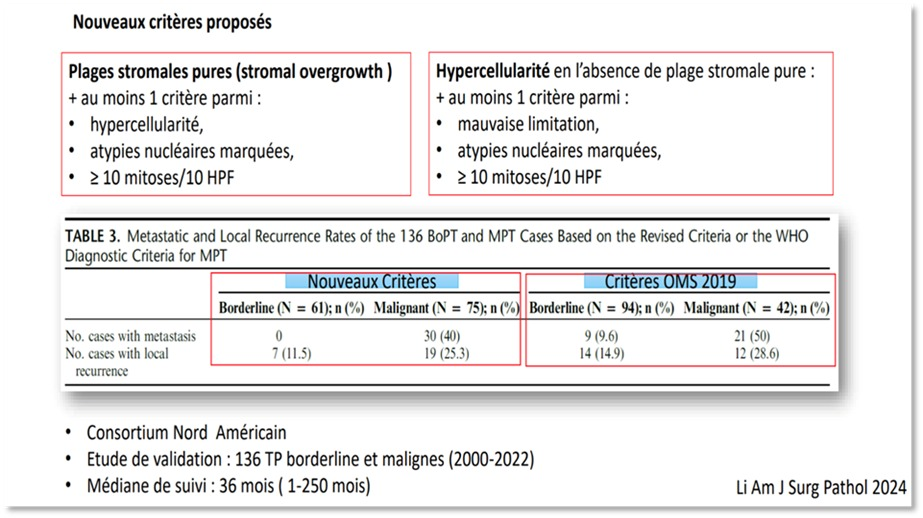

Remarques concernant l’établissement du grade d’une tumeur phyllode
Les tumeurs phyllodes sont classées en bénignes (grade 1), intermédiaire ou borderline (grade 2) et malignes (grade 3).
Points d’attention en préambule :
· le grade d’une tumeur phyllode est difficile à évaluer sur microbiopsie en raison de l’hétérogénéité intra-tumorale très fréquente de ces lésions
· Sur pièce opératoire, un échantillonnage large et rigoureux est nécessaire pour permettre un grading correct (au minimum 1 bloc/cm, mais échantillonnage qui doit monter à ≥2 blocs/cm dans les cas de grading difficile)
· Refaire des prélèvements macroscopiques sur toute tumeur de grading difficile
· Penser à prélever en macroscopie les bordures de la lésion (afin de préciser si infiltrative ou non)
· Penser à encrer, prélever et évaluer les berges d’exérèse
· En technique, l’épaisseur des lames peut influer l’évaluation de la cellularité et des mitoses ; les coupes histologiques doivent être fines (4µm)
· Tous les critères diagnostics péjoratifs doivent être mentionnés (présence/absence) et détaillés dans le compte rendu anatomo-pathologique.
La classification OMS de 2019 est en cours de révision pour une parution prochaine (2025/2026). Le chapitre sur les tumeurs phyllodes sera vraisemblablement modifié, en raison de la controverse actuelle sur les critères de définition d’une tumeur phyllode maligne selon l’OMS 2019, largement discutés dans les congrès et la littérature car trop restrictifs. La nécessité d’observer, selon la classification OMS 2019, 5 critères péjoratifs (hypercellularité stromale marquée, atypies stromales marquées, mitoses stromales ≥ 5 mitoses/mm² (≥10mitoses/10champs Gx40), présence d’une sur-représentation stromale, bordures infiltratives) pour porter un diagnostic de tumeur phyllode maligne est en effet largement critiquée du fait d’un sous-diagnostic de lésions potentiellement agressives rapporté dans de multiples séries de la littérature (pour revue : Tan PH et al. Histopathol 2025, DOI: 10.1111/his.15455).
Les experts internationaux souhaitent ainsi descendre à au moins 4 des 5 critères péjoratifs pour porter un diagnostic de tumeur phyllode maligne (Tan PH et al. Histopathol 2025, DOI: 10.1111/his.15455).
Le consortium Nord-Américain propose également un nouvel algorithme décisionnel pour établir la malignité (Li X et al. Am J Surg Pathol 2024) (Figure ci-dessous).

Dans l’attente de cette nouvelle version OMS, le groupe des pathologistes en charge de la mise à jour du référentiel SENORIF recommande une relecture par un expert des cas de grading difficile.